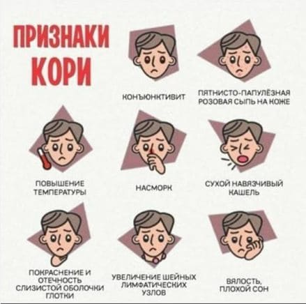

Это инфекционное заболевание практически полностью истреблено в Соединенных Штатах Америки. Каждый год регистрируются только 50—100 случаев (с недавним учащением до 150 случаев ежегодно в 2007 и 2008 годах). Более мудрые и опытные бабушки и дедушки распознают, когда ребенок заболевает этой болезнью, а большинство молодых родителей (и молодых врачей) — нет. Вот наши советы по диагностике и лечению кори.
СИМПТОМЫ
Корь начинается как большинство других заболеваний, похожих на грипп, с лихорадки, насморка, покрасневших глаз, кашля и, возможно, диареи. Через 3—4 дня после этого на лице и верхней части туловища внезапно появляется красная пятнистая сыпь. Она распространяется вниз в течение следующих 2—3 дней. Также на внутренней стороне щек можно заметить необычные белые точки (их называют пятнами Коплика), которые часто помогают поставить диагноз.
Инкубационный период длится от 8 до 12 дней. Человек становится опасным для окружающих за два дня до появления первых признаков и перестает быть таковым приблизительно через четыре дня после начала появления сыпи.

ВОТ НЕСКОЛЬКО ВОЗМОЖНЫХ ОСЛОЖНЕНИЙ, НА КОТОРЫЕ ВАМ СЛЕДУЕТ ОБРАТИТЬ ОСОБОЕ ВНИМАНИЕ Пневмония. Если лихорадка и сильный кашель продолжаются более 5 дней или симптомы воспаления легких у вашего ребенка появляются раньше, позвоните врачу. Круп. Иногда вирус кори приводит к появлению симптомов крупа. Сообщите врачу. Энцефалит. Это довольно редкое осложнение (1 на 1000 случаев заболевания корью). Симптомы схожи с симптомами менингита. Отправляйтесь в отделение неотложной помощи, если у вашего ребенка появляются эти симптомы. |
КОГДА БЕСПОКОИТЬСЯ, ЧТО ДЕЛАТЬ
Большинство детей справляются с корью без каких-либо проблем. Никакого лечения не существует. Самое главное, что нужно сделать, — изолировать ребенка, как только вы заметите сыпь, сопровождающуюся описанными выше признаками. Диагноз уточняется с помощью анализа крови. Тем не менее не стоит подвергать опасности окружающих, приходя в кабинет врача или в процедурный кабинет без предупреждения. Позвоните врачу и спросите, как лучше провести осмотр ребенка. Если анализ крови подтвердит диагноз кори, общественный департамент здоровья вмешается, чтобы убедиться, что вспышка заболевания сдерживается.
Здоровье ребенка от докторов Сирс / Сирс У. и др.